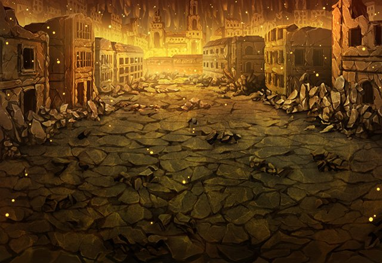

アーク
今、戦ったのは俺が黒の隠者となった後、 六英雄を倒すために利用した者たちだ。
アーク
俺は人を助けるためと自分に言い聞かせ、 あの者たちの純粋な気持ちを利用した。
アーク
彼らに六英雄は倒せないとわかりながら 捨て駒として利用した。
アーク
俺はルシアスの神徒となったことで 体だけでなく人の心も捨ててしまったんだ。
アーク
自分だけの力では六英雄には勝てないと考え 確実な勝利を得るために策を弄した。
アーク
しかも、俺を信じてくれた人をも裏切り 利用するという酷いことを……。
ティリス
で、でも彼らもアークの気持ちは きっとわかってたよ！
アーク
クーラやクダはきっと俺の考えを 理解していてくれた。
アーク
ティリス…俺は本当にイリアを 助けてもいいのか？
アーク
俺の罪に対する罰は 必ず与えられるのだからな。
アーク
すまないな。 Shou-chan、ティリス。
アーク
さあ、行こう。 モーラの言っていた浮遊城はすぐそこだ。